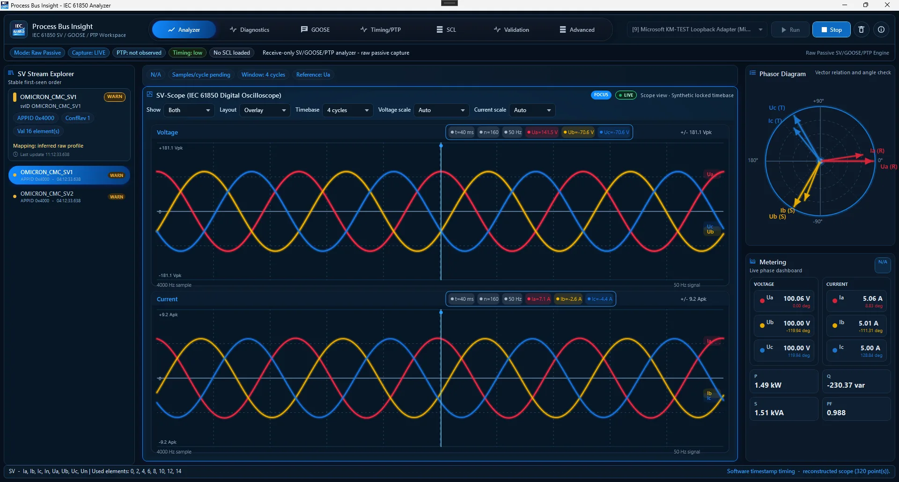
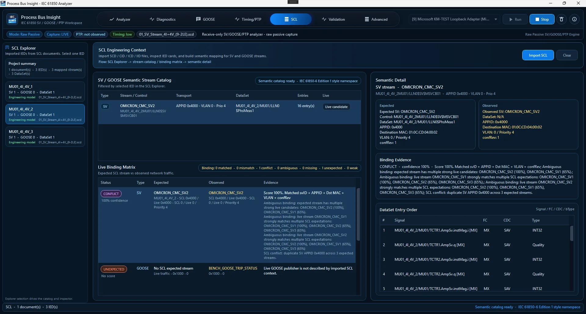
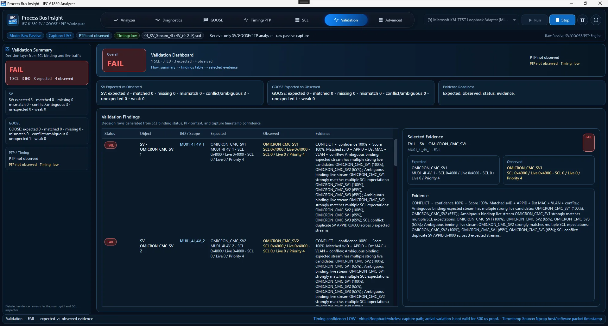
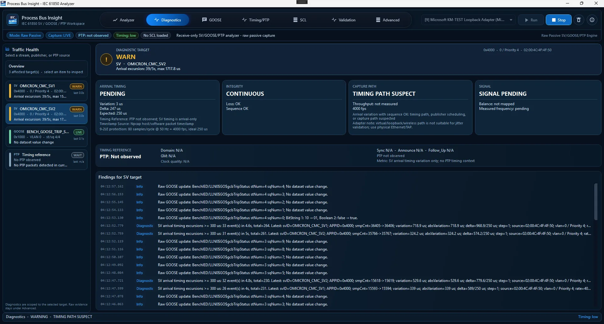
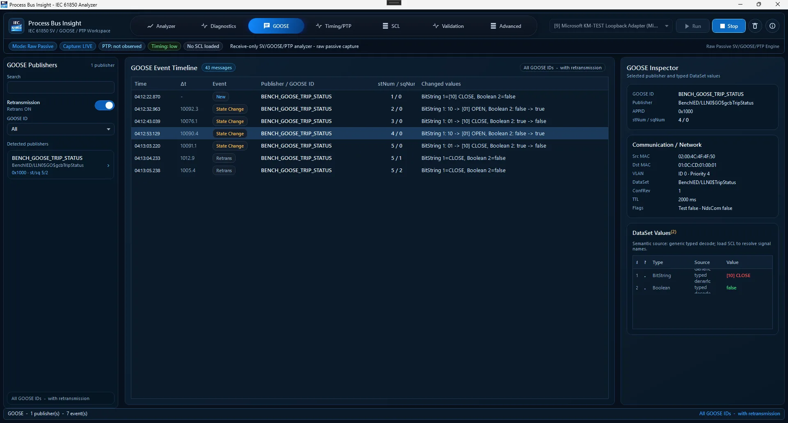
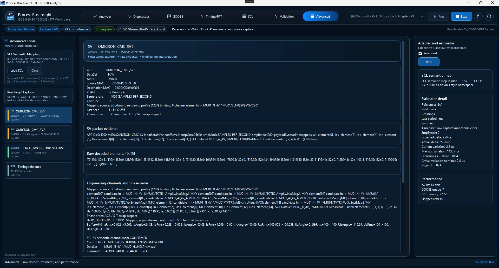

Sampled Values visibility
View SV stream identity, APPID, svID, VLAN, source MAC, continuity state, phasor, waveform, and metering context.
Analyze live Sampled Values, GOOSE, PTP timing context, and SCL expected-vs-observed evidence, then reproduce sanitized classic PCAP captures through the same decoder path. Built for FAT, SAT, commissioning, and real digital substation troubleshooting.

fullscreen PreviewGet the latest release, extract the ZIP, install Npcap if raw capture is needed, then run the single EXE from the portable folder.
Use the latest Windows x64 portable package from GitHub Releases.
rocket_launch 2. Read Quick StartUse the PDF checklist to launch the app and select the correct capture adapter.
support_agent 3. Troubleshoot safelyCheck adapter, Npcap, mirror port, traffic visibility, and timing limitations.
The interface shortens the path from packet capture to usable engineering evidence. It keeps capture limitations visible and avoids pretending that Windows software capture is certified metrology.
View SV stream identity, APPID, svID, VLAN, source MAC, continuity state, phasor, waveform, and metering context.
Inspect publishers, state changes, stNum, sqNum, typed dataset values, and event history in a cleaner engineering view.
Confirm timing traffic presence, transport context, and confidence wording while keeping software timestamp limits explicit.
Load SCD, ICD, or CID files to compare APPID, VLAN, MAC, DataSet, confRev, and stream identity against live traffic.
Feed sanitized classic Ethernet PCAP frames through the same raw analyzer path used by live capture for repeatable regression and troubleshooting.
The application listens, decodes, and replays files internally. It does not publish GOOSE/SV traffic and does not send control commands.
Use a TAP, mirror port, or controlled test switch. Avoid inserting unknown tools into protection-critical paths.
Identify what is alive first: publisher, VLAN, APPID, stream identity, timing traffic, and basic behaviour.
Compare traffic with engineering expectations or reproduce the same decoder/runtime behavior away from site.
Use clear wording for what was expected, what was observed, and which object needs attention.

fullscreen PreviewClick any screenshot to preview it fullscreen with a calm blurred backdrop.

fullscreen Preview
fullscreen Preview
fullscreen Preview
fullscreen PreviewThe trailer helps first-time users understand the pain point before downloading: packet noise is not enough; engineers need readable, defensible visibility.
Open on YouTube arrow_outwardA Windows 10 or Windows 11 PC, a safe network capture path, and Npcap when raw Ethernet capture is required. For real Process Bus testing, use a TAP, mirror port, or controlled test switch.
Yes. It is designed for visibility, troubleshooting, reproducible capture analysis, and engineering evidence during lab validation, FAT, SAT, and commissioning.
No. It is receive-only and raw-passive. It does not publish GOOSE, publish Sampled Values, or send IEC 61850 control commands.
No for live visibility. Yes for deeper expected-vs-observed validation. Loading SCD, ICD, or CID files allows the app to compare live traffic against engineering configuration.
v1.4.0-beta.1 supports classic PCAP 2.4 with Ethernet link type 1. PCAPNG and non-Ethernet link types are not yet claimed.
No. Windows software and replay timestamps are useful for screening and troubleshooting, but certification-grade timing proof needs validated test equipment and hardware timestamping.
Yes. Process Bus Insight is free and open source under Apache-2.0. There is no subscription, license key, or trial limit.